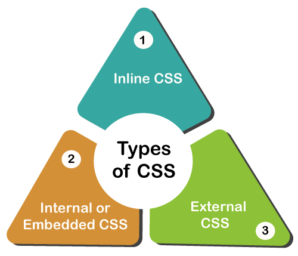

CSS -Cascading Style Sheets (CSS)
CSS is language used to describe the presentation of a document written in HTML
CSS describes how elements should be rendered on screen, on paper, in speech, or on other media.

Confusion due to many CSS levels. Beginners are more vulnerable to this issue.
Cross-Browser Issues. Different browsers work differently.
Security Issues. Security is important in today's world driven by technology and data.
Extra Work for Developers.
CSS2 was released in 1998 with added styles for other media types so that it can be used for page layout designing.
CSS2 which was comprised of a single document.
CSS2 had 'simple selectors'
CSS3 was released in 1999 and presentation-style properties were added in it that allows you to build a presentation from documents.
CSS3 has its specifications divided into many individual modules.
CSS3 calls the components as 'a sequence of simple selectors'.

At its most basic level, CSS consists of two components
Properties: These are human-readable identifiers that indicate which stylistic features you want to modify. For example, font-size , width , background-color.
Values: Each property is assigned a value. This value indicates how to style the property.
The opacity CSS property sets the opacity of an element.
Opacity is the degree to which content behind an element is hidden, and is the opposite of transparency.
The opacity() is an inbuilt function which is used to apply a filter to the image to set the transparency of the image.
To add background color in HTML, use the CSS background-color property.
Set it to the color name or code you want and place it inside a style attribute.
Then add this style attribute to an HTML element, like a table, heading, div, or span tag.
Adding a background color can help a certain element stand out on the page, making it more readable.
To control the repetition of an image in the background, use the background-repeat property.
The background-repeat property in CSS is used to repeat the background image both horizontally and vertically. It also decides whether the background image will be repeated or not.
You can use no-repeat value for the background-repeat property if you do not want to repeat an image.
The background-position CSS property sets the initial position for each background image.
relative to the background position layer defined by background-origin.
The background-image is placed default to the top-left corner of an element with a repetition on both horizontally & vertically.

The background-attachment CSS property sets whether a background image's position is fixed within the viewport, or scrolls with its containing block.
This property has three values scroll, fixed, and local. Its default value is scroll.
The local value of this property causes the element to scroll with the content. If we set the value to fixed, the background image will not move during scrolling in the browser.
scroll: It is the default value that prevents the element from scrolling with the contents, but scrolls with the page.
Background property is a complex property.
while color is inherited property.
To horizontally center a block element, use margin: auto
There are two steps to center a block-level element.
Step 1: Define the external width.
Step 2: Set the left-margin and the right-margin of the element to auto.

The Specification defines how CSS properties should be implemented by browser vendors along with detailed algorithms, code samples and tabular information.
The Specification also include: The syntax and data types of the language Detailed explanation on CSS Selectors How you can assign values to properties The Cascade (the "C" in CSS) How inheritance works The Box Model e.t.c
The Specification also specify how stylesheets can be included in your web document and how to target specific media e.g print or screen.
There are three ways you can use to implement CSS as a web page
1-Inline - by using the style attribute inside HTML elements.
2-Internal - by using a
3-External - by using a <.link> element to link to an external CSS file.
Embedded Stylesheet: It allows you to define styles for a particular HTML document as a whole in one place.
This is done by embedding the
Embedded style sheets are particularly useful for HTML documents that have unique style requirements from the rest of the documents in your project.
Using embedded stylesheets holds a distinct advantage over inline styles which only allow you to address one HTML element at a time.

The <.link> HTML element specifies relationships between the current document and an external resource.
Multiple webpages can use the same link to access the stylesheet.
This simple example provides the path to the stylesheet inside an href attribute, and a rel attribute with a value of stylesheet.

Advantage
With the help of External Style Sheets, the styles of numerous documents can be organized from one single file.
In External Style Sheets, Classes can be made for use on numerous HTML element types in many forms of the site.
In complex contexts, Methods like selector and grouping can be implemented to apply styles.
Disadvantages
An extra download is essential to import style information for each file.
The execution of the file may be deferred till the external style sheet is loaded.
While implementing style sheets, we need to test Web pages with multiple browsers in order to check compatibility issues.
A CSS selector is the first part of a CSS Rule. It is a pattern of elements and other terms that tell the browser which HTML elements should be selected to have the CSS property values inside the rule applied to them.
CSS selectors are used to "find" (or select) the HTML elements you want to style.
Media queries allow you to apply CSS styles depending on a device's general type (such as print vs. screen) or other characteristics such as screen resolution or browser viewport width.
width, overflow-block, overflow-inline, grid, height, hover, display-mode, any-hover, color, color-index.
continuous or paged. visual, audio, speech, or tactile. grid (for character grid devices), or bitmap. interactive (for devices that allow user interaction), or static (for those that do not). all (includes all media types)
Rulesets are the main building blocks of a style sheet, which often consists of only a big list of them.
The objective is to apply a bunch of properties for certain distinct qualities to a solitary.
This is a wider card with supporting text below as a natural lead in to additional content. This content is a litle bit longer.
This is a wider card with supporting text below as a natural lead in to additional content. This content is a litle bit longer.
This is a wider card with supporting text below as a natural lead in to additional content. This content is a litle bit longer.